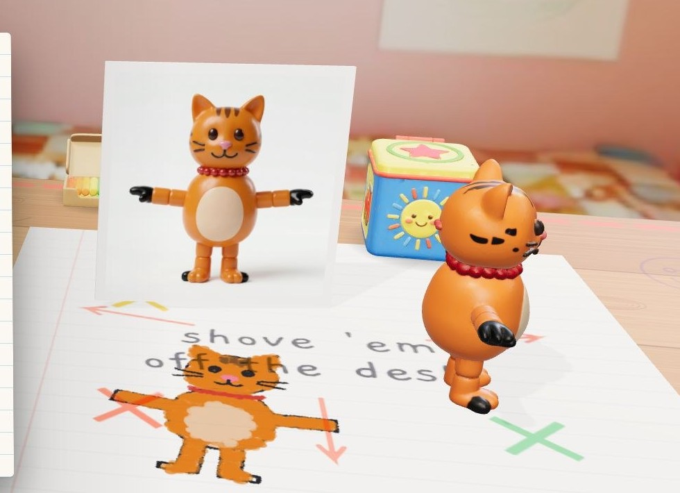

Doodle
Sumo
Draw a doodle. Three to five minutes later it is a rigged 3D toy with ten moves. Then shove your rivals off a giant desk.
画一个涂鸦，三到五分钟后它就成了带骨骼和十个动作的 3D 玩具，然后把对手推下大书桌。
Lux3D multimodal imageimage-to-3D (G1 + G1-Turbo)text-to-3Dhumanoid auto-riganimation retargetarticulation → URDF3MF / STL exportAholo SpatialGen
automationbot24x7.github.io/doodle-sumo
Rajeev Bhandari · team Forge (solo) · Manycore Aholo Global 3D AI Hackathon · #Manycorehackathon




A cat drawn on the in-game pad → Lux3D toy concept → Lux3D 3D model → rigged and dancing, after the button was pressed.
1